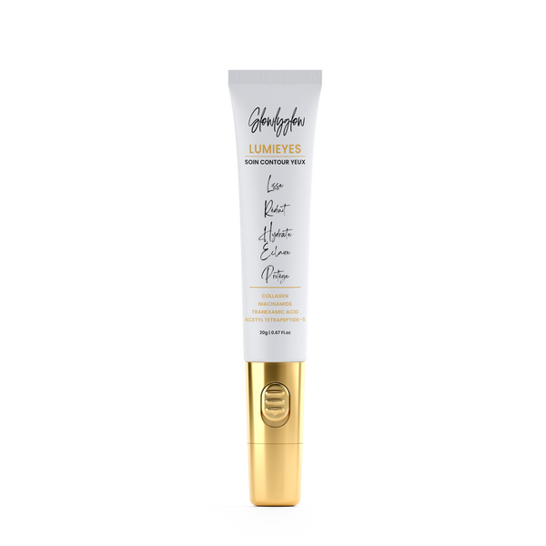

Glowly Glow
Lecture de marque, hiérarchisation de catalogue et système de contenus premium pour rendre une offre beauté plus lisible, plus incarnée et plus désirable.
À partir du site officiel et des visuels publics de la marque, Astra Studio lit Glowly Glow comme une marque qui possède déjà une vraie densité produit. Le sujet : choisir les bons héros, clarifier les promesses et transformer le catalogue en territoire éditorial exploitable.
Soins visage, soins corps, capillaires, packs et brumes parfumées.
Beaucoup de matière, mais un besoin fort de hiérarchisation.
Faire monter la désirabilité sans perdre la clarté du message.
Site, Reels, TikTok, Stories, ads et assets de lancement.

